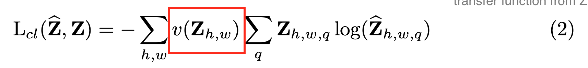
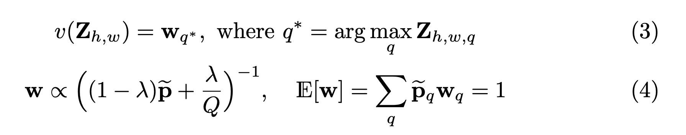

Objective function
Given a lightness channel X, they predict Y_hat. These predictions work in the CIE lab color space. https://en.wikipedia.org/wiki/CIELAB_color_space The purpose of using Lab is its origin in creating a color space mapped to human perception.
The paper points out the need to not use the Euclidean distance as loss, due to the multimodal aspect of the problem. Since there are a number of potential valid solutions, you do not want to simply take the distance from the mean, as you will tend to bias heavily towards an average color. Previous works have taken such approach and yield fairly desaturated images. In other words, the objective is not distance from a mean, but a reasonable distribution that could be a valid understanding of color.
Thus, they add an intermediate function Z to predict into the color space, and use a transfer function to convert their Z to Y outputs. Their multimodal loss is shown in (2).

Class rebalancing
Due to the large bias towards the average/desaturated values, the paper rebalances the rarer colors with a function v shown in the red box of (2). Below in (3) shows how v is computed, where each pixel is weighted due to its rarity.
